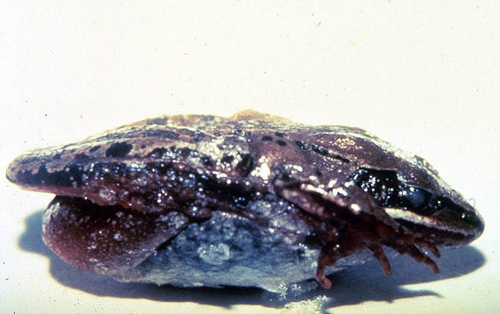

The wood frog is one of the most remarkable examples of adaptation to extreme environmental conditions. Unlike most amphibians, which avoid freezing temperatures by migrating or hibernating in protected areas, the wood frog survives winter by allowing up to 70% of its body water to freeze. (What Adaptations Help a Wood Frog Survive in Deciduous Forests, 2026).
During this period, its heart stops beating, breathing ceases, and the frog enters a state of suspended animation until temperatures rise again in the spring. This adaptation is made possible through a unique physiological mechanism. As temperatures drop, the frogs liver rapidly releases large quantities of glucose while urea accumulates in its tissues. These substances act as natural cryoprotectants, lowering the freezing point of fluids inside the cells and preventing the formation of damaging ice crystals. Ice is restricted to extracellular spaces, protecting vital organs such as the brain, heart, and liver from injury. Once temperatures increase, the frog thaws and can resume normal activity withing hours.

The wood frog tolerance is an adaptation that likely evolved through natural selection. Individuals possessing genetic traits that improved their ability to survive harsh winters were more likely to survive, reproduce and pass these traits to future generations. Over time, these advantageous characteristics became more common withing population, allowing the species to thrive in northern forests where winter temperatures regularly fall below freezing.
|
In addition to its cold weather adaptations, the wood frog exhibits other traits that improve its survival. Its brown coloration and distinctive dark facial mask provide camouflage among leaf litter on the forest floor, helping it avoid predators. The species also uses an explosive breeding strategy, reproducing rapidly in temporary vernan pools during early spring before these habitats dry out. This reproductive timing reduces predation on eggs and larvae while maximizing reproductive success.
|